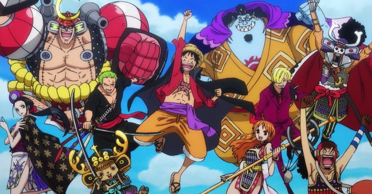

Chápeus de Palha
Os piratas do "Chápeus de Palha" é o nome de uma das tripulções dos Quatro Imperadores do Mar. Liderados por seu capitão Monkey D. Luffy, eles andam pelo mundo salvando pessoas, lutando com a marinha e o governo mundial, indo atrás do tesouro do Rei Dos Piratas "Gol D. Roger", o One Piece.
Tripulantes
Luffy

Monkey D. Luffy, também conhecido como “Luffy do Chapéu de Palha” e comumente como “Chapéu de Palha”, é o fundador e capitão dos cada vez mais infames e poderosos Piratas do Chapéu de Palha1. Ele deseja encontrar o tesouro lendário deixado para trás pelo falecido Gol D. Roger e assim se tornar o Rei dos Piratas1. Ele acredita que ser o Rei dos Piratas significa ter a maior liberdade do mundo.
Considerado como um dos doze piratas que são referidos como "A Pior Geração".
Zoro
Roronoa Zoro, também conhecido como “Caçador de Piratas” Zoro, é o combatente dos Piratas do Chapéu de Palha e um ex-caçador de recompensas. Zoro foi o primeiro membro a se juntar à tripulação. Ele é famoso como mestre espadachim e sua grande força, junto com as ações de seu capitão, às vezes levam os outros a acreditar que ele era o verdadeiro capitão da tripulação. Seu sonho é se tornar o maior espadachim do mundo. Zoro também é considerado como um dos doze piratas que são referidos como "A Pior Geração".
Nami
Nami, também conhecida como “Gata Ladra”, é a navegadora dos Piratas do Chapéu de Palha. Ela é o terceiro membro da tripulação e a segunda a entrar, fazendo isso durante o Arco Orange Town. Ela era anteriormente um membro dos Piratas do Arlong e inicialmente se juntou aos Chapéus de Palha para poder roubá-los e comprar de volta a sua aldeia de Arlong. No entanto, ela se juntou legitimamente aos Chapéus de Palha depois que eles se rebelaram e derrotaram Arlong. Seu sonho é fazer um mapa de todo o mundo.
Usopp
Usopp, também conhecido como “God Usopp”, é o atirador dos Piratas do Chapéu de Palha. Ele é o quarto membro da tripulação e o terceiro a se juntar, fazendo isso no final do Arco Vila Syrup. Antes de se unir aos Chapéus de Palha, ele era o capitão dos Piratas Usopp e o amigo mais próximo de Kaya. Após colaborar com os Chapéus de Palha para derrotar Kuro e os Piratas do Gato Preto, ele foi convidado a se juntar à tripulação. Apesar de sua covardia normal, Usopp sonha em se tornar um corajoso guerreiro do mar como seu pai, e vive todos os dias em busca de viver à altura deste sonho.
Sanji
Sanji, também conhecido como “Perna Negra” Sanji, é o cozinheiro dos Piratas do Chapéu de Palha. Ele é o quinto membro da tripulação e o quarto a se juntar, fazendo isso no final do Arco Baratie. Nascido como o terceiro filho e quarta criança da Família Vinsmoke, ele renunciou à família duas vezes. Após fugir dos Vinsmokes quando criança, ele eventualmente entrou sob os cuidados de Zeff, como o sous chef(sub-chef) do Baratie, onde permaneceu até conhecer Monkey D. Luffy, que o convenceu a se juntar à sua tripulação. Seu sonho é encontrar o lendário paraíso dos chefs, All Blue.